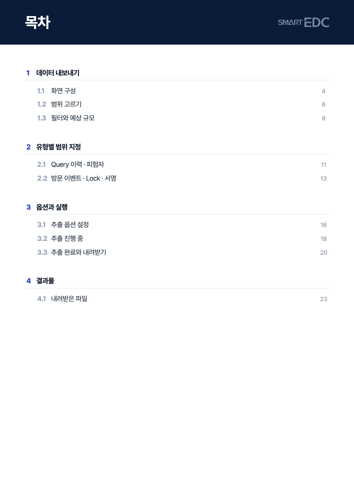
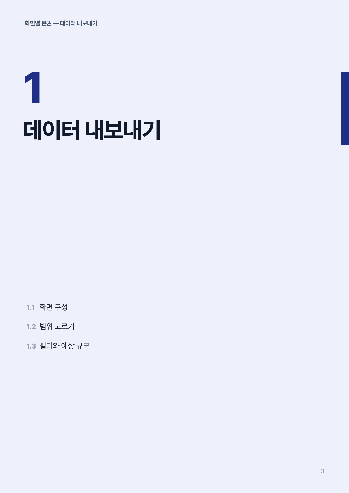
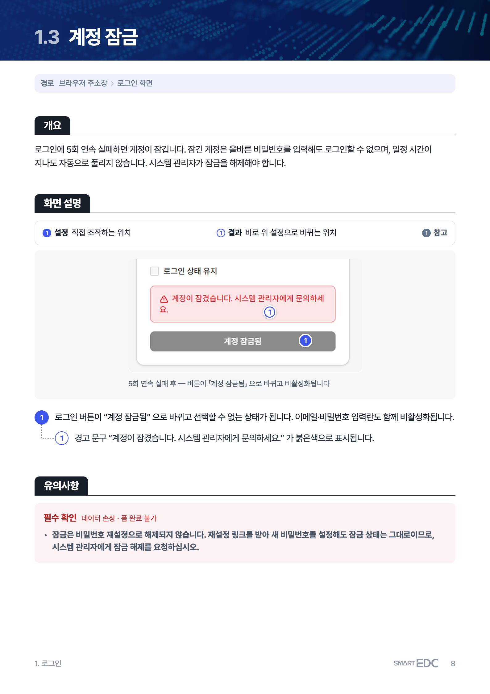
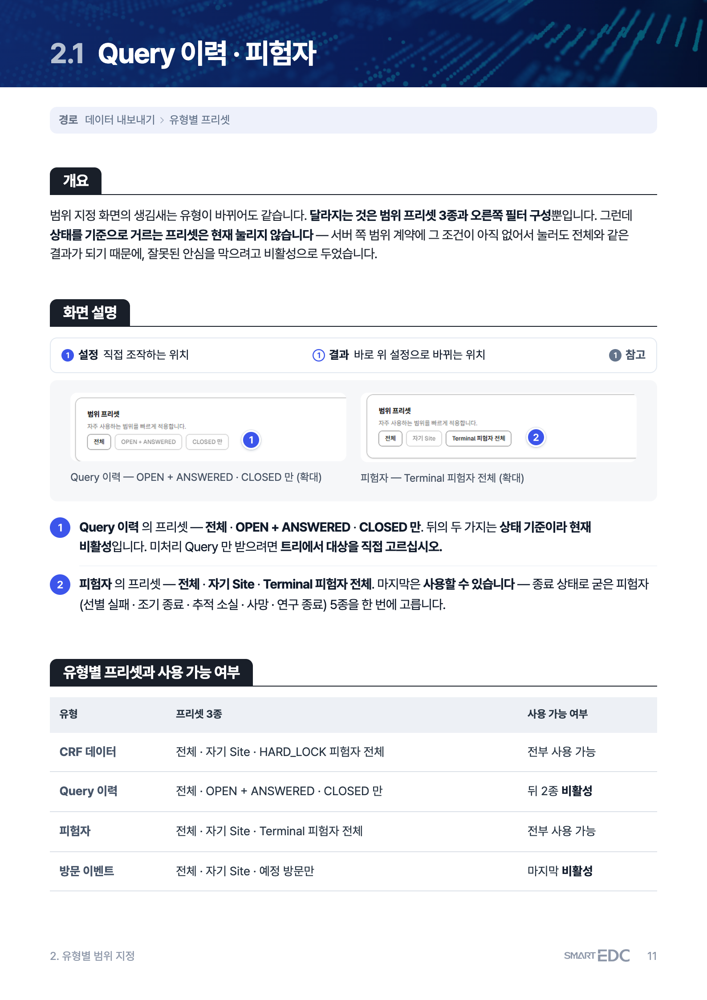
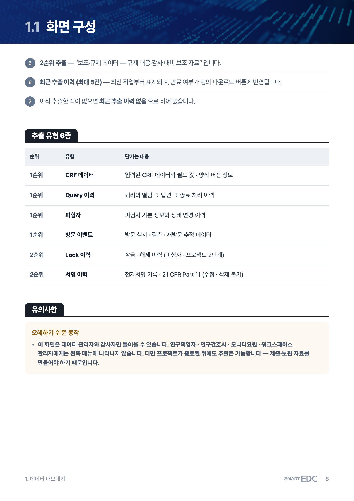
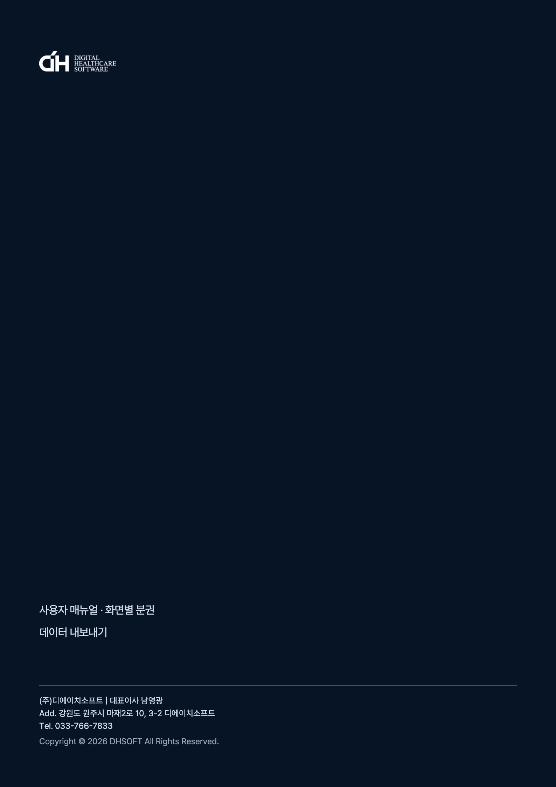

사용자 매뉴얼 템플릿
디자인 가이드
표지 · 목차 · 장 간지 · 본문 · 부록 표 · 뒤표지와 디자인 토큰, 인쇄 사양
템플릿 v6 · 2026-11-09
사용자 매뉴얼 템플릿
표지 · 목차 · 장 간지 · 본문 · 부록 표 · 뒤표지와 디자인 토큰, 인쇄 사양
본문 쪽의 구역과 재단 여백. 파선은 재단 여백 끝, 실선은 재단선, 점선은 안전 영역이다.
| 이름 · 토큰 | HEX | RGB | CMYK | 쓰임 | |
|---|---|---|---|---|---|
| primary 50 primary-50 | #EEF1FB | 238 241 251 | 5 4 0 2 | 경로 바탕, 간지 바탕, 키값 바탕 | |
| primary 200 primary-200 | #A6B5FF | 166 181 255 | 35 29 0 0 | 표지 분류 문구 (어두운 바탕 위) | |
| primary primary | #3C55EB | 60 85 235 | 74 64 0 8 | 번호 원 설정·결과, 목차 장 번호, 참조 번호 | |
| primary 800 primary-800 | #202F86 | 32 47 134 | 76 65 0 47 | 키값 글, 간지 큰 번호·세로 막대 | |
| 남색 900 navy-900 | #071426 | 7 20 38 | 82 47 0 85 | 표지·뒤표지 바탕, 목차 윗띠 | |
| 남색 700 navy-700 | #102B72 | 16 43 114 | 86 62 0 55 | 본문 헤더 그라데이션 덧색 (92% → 55% → 24%) |
| 이름 · 토큰 | HEX | RGB | CMYK | 쓰임 | |
|---|---|---|---|---|---|
| 강조 글 text-strong | #111B2B | 17 27 43 | 60 37 0 83 | 제목, 굵은 글, 소제목 탭, 간지 제목, 목차 장 제목 | |
| 본문 글 text | #202630 | 32 38 48 | 33 21 0 81 | 본문, 표 글, 목차 항목, 간지 목록 글 | |
| 보조 글 text-sub | #475569 | 71 85 105 | 32 19 0 59 | 캡션, 카드 본문, 표 첫 열, 범례, 간지 구분 문구 | |
| 약한 글 text-weak | #64748B | 100 116 139 | 28 17 0 45 | 경로 글·라벨, 번호 원 참고 | |
| 흐린 글 text-faint | #94A3B8 | 148 163 184 | 20 11 0 28 | 목차·간지 번호, 쪽번호, 푸터, 헤더 절 번호, 경로 꺾쇠, 회색 로고 | |
| 어두운 바탕 글 text-on-dark | #D2DCEB | 210 220 235 | 11 6 0 8 | 표지·뒤표지 설명, 구분 문구, 회사 정보 | |
| 흰 글 white | #FFFFFF | 255 255 255 | 0 0 0 0 | 표지·목차·헤더 제목, 소제목 탭 글, 번호 원 숫자 | |
| 결과 설명 글 result-text | #1D4ED8 | 29 78 216 | 87 64 0 15 | 결과 항목 앞 기호와 결과 설명 (원본 색 그대로) | |
| 결과 설명 진한 글 result-dark | #1E3A8A | 30 58 138 | 78 58 0 46 | 결과 설명 강조 (원본 색 그대로) |
| 이름 · 토큰 | HEX | RGB | CMYK | 쓰임 | |
|---|---|---|---|---|---|
| 회색 50 gray-50 | #F6F7F9 | 246 247 249 | 1 1 0 2 | 캡처 틀 바탕 | |
| 회색 100 gray-100 | #F1F5F9 | 241 245 249 | 3 2 0 2 | 참고 카드 바탕, 표 머리 바탕, 번호 설명 사이 선 | |
| 구분선 line | #E2E8F0 | 226 232 240 | 6 3 0 6 | 모든 구분선·테두리, 회색 키값 바탕 | |
| 필수 확인 카드 card-must | #FDF2F3 | 253 242 243 | 0 4 4 1 | 필수 확인 카드 바탕 | |
| 유의사항 빨강 notice-red | #B91C1C | 185 28 28 | 0 85 85 27 | 유의사항 글씨 빨강 (원본 색), 필수 확인 카드 제목 | |
| 필수 확인 강조 바탕 card-must-mark | #F6DCDE | 246 220 222 | 0 11 10 4 | 필수 확인 카드 안 강조 바탕 | |
| 오해하기 쉬운 동작 카드 card-misc | #FEF9F0 | 254 249 240 | 0 2 6 0 | 오해하기 쉬운 동작 카드 바탕 | |
| 오해 카드 제목 card-misc-title | #885910 | 136 89 16 | 0 35 88 47 | 오해하기 쉬운 동작 카드 제목 | |
| 오해 카드 강조 바탕 card-misc-mark | #FCE8BF | 252 232 191 | 0 8 24 1 | 오해하기 쉬운 동작 카드 안 강조 바탕 | |
| 참고 카드 card-note | #F1F5F9 | 241 245 249 | 3 2 0 2 | 참고 카드 바탕 (회색 100과 같은 값) |
| 자리 | 크기 | 굵기 | 색 | 줄 높이 | 자간 |
|---|---|---|---|---|---|
| 표지 제목 | 82px | 800 | 흰 글 | 100px | -3% |
| 표지 분류 문구 | 28px | 700 | primary 200 | 36px | -3% |
| 표지 보조 설명 | 20px | 400 | 어두운 바탕 글 | 26px | -3% |
| 목차 제목 | 34px | 700 | 흰 글 | 40px | -3% |
| 목차 장 제목 · 번호 | 16px | 700 · 800 | 강조 글 · primary | 24px | -3% |
| 목차 항목 | 16px | 400 (번호 700) | 본문 글 (번호는 흐린 글) | 24px | -3% |
| 간지 큰 번호 | 100px | 800 | primary 800 | 120px | -3% |
| 간지 제목 | 52px | 700 | 강조 글 | 66px | -3% |
| 간지 목록 | 18px (번호 16px) | 400 (번호 700) | 본문 글 (번호는 흐린 글) | 24px | -3% |
| 본문 헤더 제목 | 32px | 700 | 흰 글 (번호는 흐린 글) | 44px | -3% |
| 경로 | 12px | 400 (라벨 700) | 약한 글 (라벨 같은 색 700) | 20px | 0 |
| 소제목 탭 | 18px | 700 | 흰 글 | 24px | -3% |
| 개요 · 번호 설명 | 14px | 400 (강조 700) | 본문 글 · 강조 글 | 22px | -3% |
| 범례 | 14px | 400 (이름 700) | 보조 글 | 20px | 0 |
| 캡션 | 12px | 400 | 보조 글 | 18px | 0 |
| 유의사항 카드 제목 · 본문 | 14px · 14px | 700 · 500 | 카드별 · 보조 글 | 20px · 22px | -3% |
| 표 머리 · 표 본문 | 12px · 14px | 700 · 400 | 본문 글 | 20px | 0 |
| 참조 번호 | 10px | 700 | primary | 0 (위첨자 3px) | 0 |
| 푸터 | 12px | 400 | 흐린 글 | 20px | 0 |
| 항목 | 값 |
|---|---|
| 쪽 크기 | 210 × 297mm (A4). CSS 794 × 1123px, 1px = 0.75pt |
| 재단 여백(인쇄) | 사방 3mm. 인쇄 PDF는 216 × 303mm, 재단선은 여백 모서리에 표시 |
| 좌우 여백 | 56px ≈ 14.8mm. 표지·목차·간지·본문·푸터 모두 같다 |
| 안전 영역 | 재단선 안쪽 5mm 안에는 글자를 두지 않는다. 좌우 여백 14.8mm와 본문 위아래 여백이 이를 채운다 |
| 본문 헤더 | 한 줄 98px(위 38 + 줄 44 + 아래 16). 제목이 길면 줄 수만큼 커지고 아래 내용이 함께 내려간다 |
| 본문 영역 | 헤더 아래끝 + 22px부터 푸터 위(쪽 아래 84px)까지 |
| 푸터 | 쪽 위 1064px, 왼쪽 상위 장 제목, 오른쪽 로고(높이 14px) + 20px + 쪽번호. 선은 긋지 않는다 |
| 모서리 | 카드·경로·캡처 틀 8px. 소제목 탭은 위 두 모서리만 8px |
| 소제목 탭 간격 | 위 40px(경로 다음은 38px), 아래 12px |
| 유의사항 카드 | 안쪽 14 / 14.7 / 15px, 카드 사이 7.33px, 제목↔본문 6px, 항목 사이 4px |
| 번호 설명 | 항목 위아래 10px, 원 23px(결과 22px), 원↔글 10px, 항목 사이 1px 선 회색 100 |
| 화면 캡처 | 틀 안쪽 14 / 16 / 16px, 캡처 사이 16px, 캡처 모서리 8px, 캡션 위 10px |
| 번호 원(화면 위) | 지름 22px, 흰 테두리 2px, 숫자 12px 700. 글자·아이콘을 가리면 옆 빈자리로, 원끼리 지름 + 4px 이상 띄움 |
| 자간 | 한국어 10pt 초과 -3%, 영어·독일어 -1%, 일본어 0. 10pt 이하 기본값 |
실제 분권 표지(데이터 내보내기 · 한국어판)

실제 분권 목차(데이터 내보내기 · 한국어판)

실제 분권 간지(데이터 내보내기 · 한국어판)

실제 분권 본문(로그인 1.3 계정 잠금 · 한국어판)

실제 분권 본문(데이터 내보내기 2.1 · 한국어판)

실제 분권 표 쪽(데이터 내보내기 1.1 화면 구성 · 한국어판)

실제 분권 뒤표지(데이터 내보내기 · 한국어판)
| 파일 | 역할 |
|---|---|
| prompt/SMART-EDC_매뉴얼_디자인_고정프롬프트.md | 모든 디자인 규칙과 결정 기록. 바뀐 규칙은 날짜·사례와 함께 여기에 먼저 적는다 |
| template/style.css | 표지·목차·간지·본문·표·카드의 모든 토큰 값 |
| template/paginate.js | 쪽 나눔, 헤더 가변 높이, 표 첫 열 너비, 제목 끝 줄 보정 |
| template/build.py · make_all.sh | 분권 데이터(data/<lang>.json)로 HTML을 만들고 검사까지 한 번에 |
| template/img_localize.py · localize_all.sh | 번역본 화면 캡처의 글자 교체(OCR → 검수 → 번역 → 다시 그리기 → 검사) |
| tools/place_markers.py | 화면 위 번호 원 자리 잡기(가림·겹침 없이) |
| tools/widen_buttons.py · extend_cut_buttons.py | 번역 글자가 긴 버튼·칩 넓히기, 잘린 버튼 완성 |
| template/check*.py | 글자·색·복사·얼룩·남은 한글 검사. 모두 불일치 0이어야 넘긴다 |
SMART EDC 사용자 매뉴얼 디자인 가이드
템플릿 v6 · 2026-11-09
(주)디에이치소프트 | 대표이사 남영광
Add. 강원도 원주시 마재2로 10, 3-2 디에이치소프트
Tel. 033-766-7833